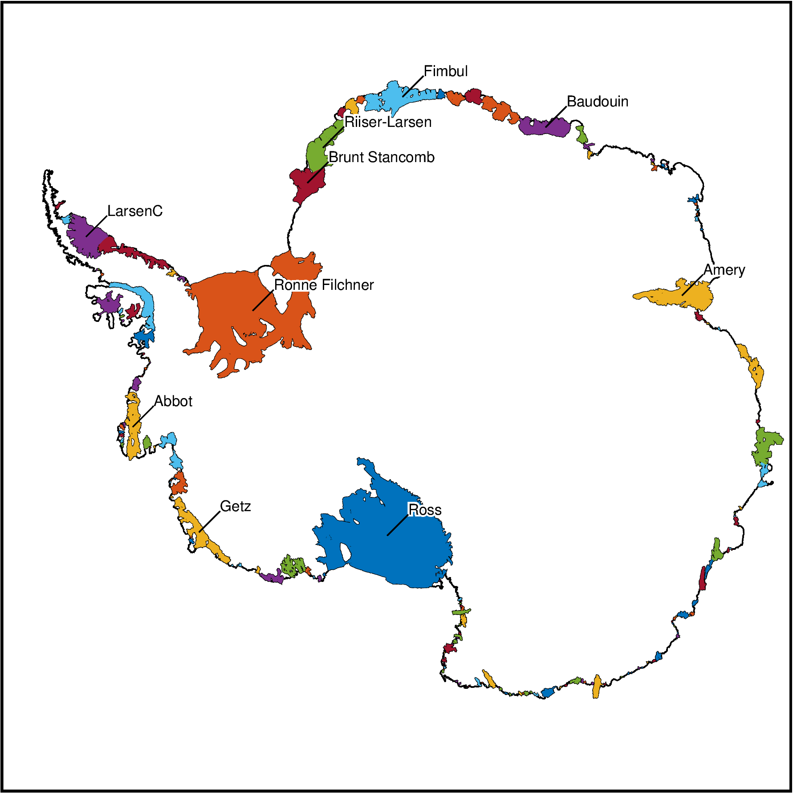
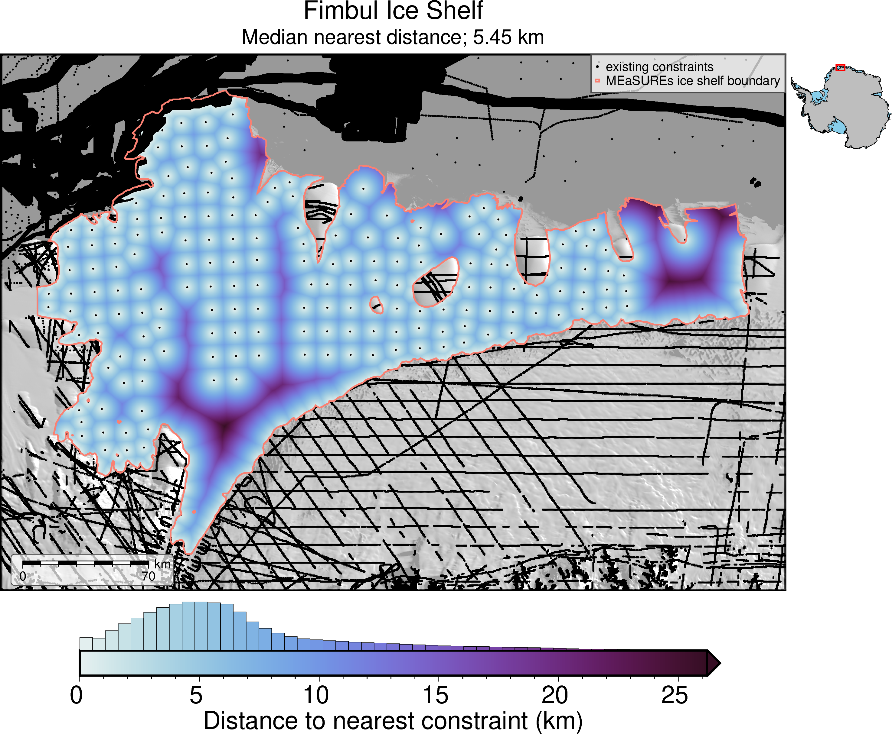
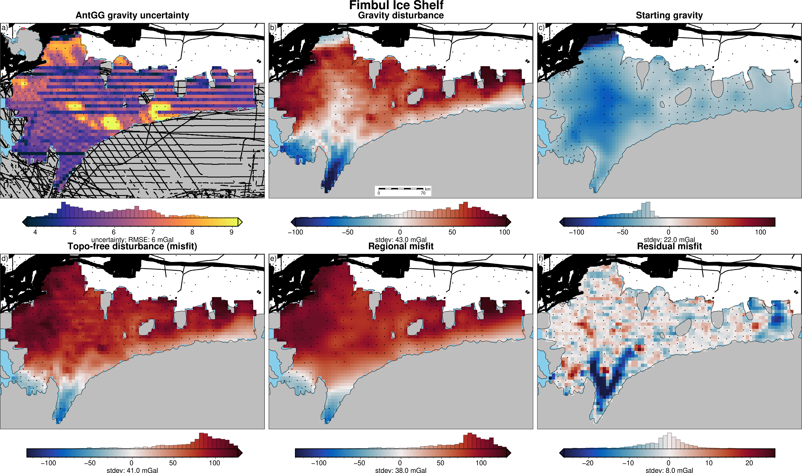
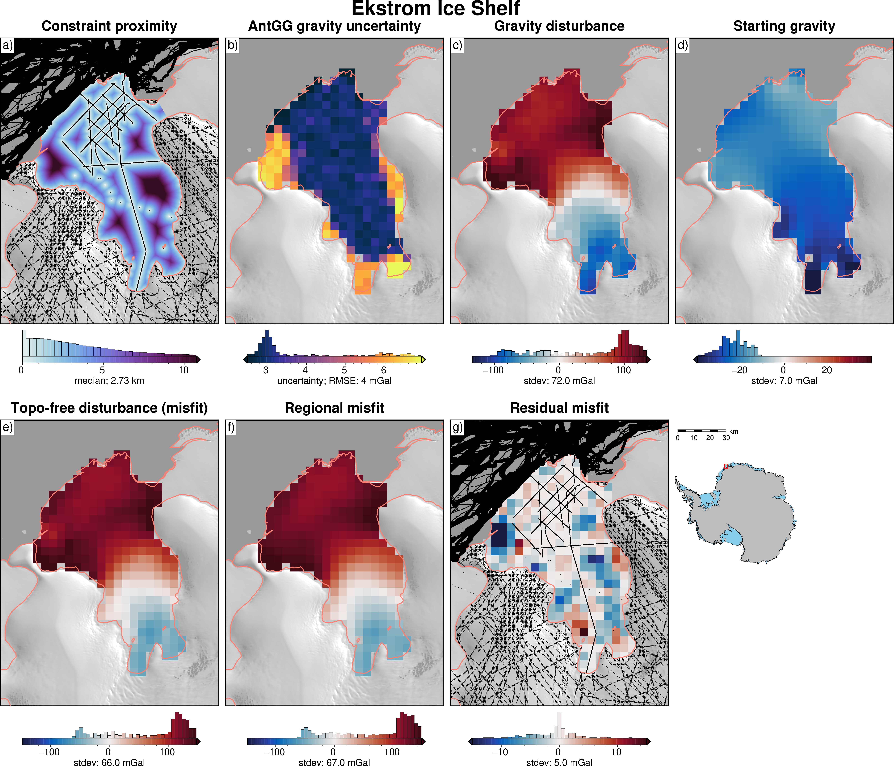
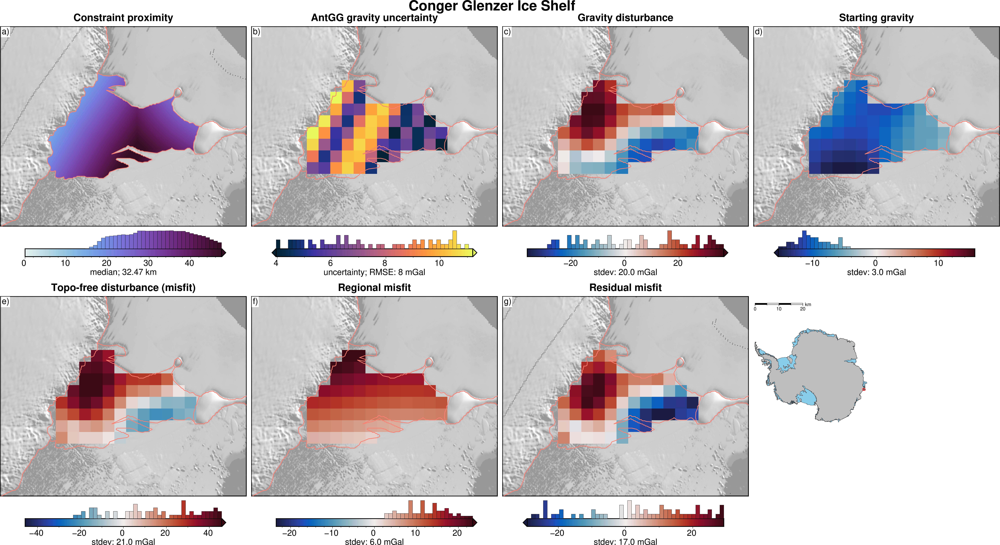

Antarctic ice shelf gravity and constraint proximity calculations¶
This notebooks gathers data, calculates statistics and makes plots for all Antarctic ice shelves. The output statistics from the notebook are analyzed in the following notebook antarctic_ice_shelf_analysis.ipynb.
[ ]:
%load_ext autoreload
%autoreload 2
import logging
import os
import geopandas as gpd
import numpy as np
import pandas as pd
import pygmt
import scipy as sp
import verde as vd
import xarray as xr
from polartoolkit import fetch, maps, regions
from polartoolkit import utils as polar_utils
os.environ["POLARTOOLKIT_HEMISPHERE"] = "south"
import pathlib
import shutil
import seaborn as sns
from invert4geom import utils
from synthetic_bathymetry_inversion import ice_shelf_stats
sns.set_theme()
[2]:
logging.basicConfig(level=logging.WARN)
# logging.getLogger("synthetic_bathymetry_inversion").setLevel(logging.DEBUG)
Ice shelf masks¶
Here we gather regional masks for each Antarctic ice shelves. We will use the Antarctic boundary shapefiles from MEaSUREs. We have merged some shelves, such as the Ross, which were separated into E and W components. The shelves are ordered by size.
Mouginot, J., B. Scheuchl, and E. Rignot. “MEaSUREs Antarctic Boundaries for IPY 2007-2009 from Satellite Radar, Version 2.” National Snow and Ice Data Center, 2017. https://nsidc.org/data/nsidc-0709/versions/2.
[3]:
ice_shelves = ice_shelf_stats.get_ice_shelves()
ice_shelves
[3]:
| NAME | Regions | TYPE | geometry | area_km | |
|---|---|---|---|---|---|
| 0 | Ross | West | FL | POLYGON ((-240677.184 -678259.006, -240038.274... | 480428.37 |
| 1 | Ronne_Filchner | West | FL | POLYGON ((-1006734.891 880592.98, -1006335.923... | 427041.70 |
| 2 | Amery | East | FL | POLYGON ((2134701.422 618463.117, 2131452.011 ... | 60797.28 |
| 3 | LarsenC | Peninsula | FL | POLYGON ((-2235724.269 1271352.188, -2235828.5... | 47443.51 |
| 4 | Riiser-Larsen | East | FL | POLYGON ((-592166.317 1592824.258, -593783.16 ... | 42913.14 |
| ... | ... | ... | ... | ... | ... |
| 159 | Perkins | West | FL | POLYGON ((-1129608.753 -1201300.734, -1130034.... | 7.01 |
| 160 | Paternostro | East | FL | POLYGON ((824294.485 -2115301.607, 823916.673 ... | 6.55 |
| 161 | Arneb | East | FL | POLYGON ((333867.825 -1897953.452, 333673.461 ... | 6.41 |
| 162 | Falkner | East | FL | POLYGON ((425350.532 -1726631.609, 423726.753 ... | 5.69 |
| 163 | Hamilton_Piedmont | Islands | FL | POLYGON ((-1589132.027 -582392.525, -1589188.1... | 5.60 |
164 rows × 5 columns
[4]:
# choose how many ice shelves to plot
df = ice_shelves.iloc[:]
# plot basemap with coastline and grounding lines
fig = maps.basemap(
region=regions.antarctica,
coast=True,
)
# plot ice shelves
fig.plot(
df,
close=True,
fill="auto",
)
# plot names
ice_shelf_stats.plot_ice_shelf_names(fig, df.iloc[0:10])
fig.show()

[5]:
ice_shelves.NAME.unique()
[5]:
array(['Ross', 'Ronne_Filchner', 'Amery', 'LarsenC', 'Riiser-Larsen',
'Fimbul', 'Brunt_Stancomb', 'Getz', 'Baudouin', 'Abbot',
'Shackleton', 'George_VI', 'LarsenD', 'Borchgrevink', 'West',
'Wilkins', 'Sulzberger', 'Jelbart', 'Lazarev', 'Stange', 'Nivl',
'Ekstrom', 'Nickerson', 'Totten', 'Pine_Island',
'Moscow_University', 'Dotson', 'Mertz', 'Prince_Harald',
'Thwaites', 'Bach', 'Cook', 'Crosson', 'Rennick', 'Venable',
'Cosgrove', 'Tracy_Tremenchus', 'Mariner', 'Holmes', 'Drygalski',
'LarsenB', 'Quar', 'Vigrid', 'Atka', 'Nansen', 'Ninnis',
'Conger_Glenzer', 'Publications', 'Dibble', 'LarsenE',
'Vincennes_Bay', 'WilmaRobertDowner', 'Swinburne', 'Shirase',
'LarsenF', 'Aviator', 'Lillie', 'LarsenA', 'Voyeykov',
'Rayner_Thyer', 'Land', 'Withrow', 'Lauritzen', 'Mendelssohn',
'Tucker', 'Edward_VIII', 'LarsenG', 'Hannan', 'Fitzgerald',
'Mulebreen', 'Helen', 'Wordie', 'Slava', 'Williamson', 'Zubchatyy',
'GeikieInlet', 'Matusevitch', 'May_Glacier', 'Brahms',
'Nordenskjold', 'Frost', 'Suvorov', 'Hull', 'PourquoiPas',
'Hamilton', 'Rund_Bay', 'Underwood', 'Fisher', 'Moubray',
'Sorsdal', 'HornBluff', 'Gillet', 'Ferrigno', 'Verdi', 'Noll',
'Hoseason', 'Tinker', 'Myers', 'Walgreen', 'SmithInlet', 'Wylde',
'Richter', 'Cheetham', 'Utsikkar', 'Ainsworth', 'Philbin_Inlet',
'Dennistoun', 'Andreyev', 'Ironside', 'WattBay', 'Astrolabe',
'Cirque_Fjord', 'Flatnes', 'Francais', 'Campbell', 'Whittle',
'Thomson', 'Deakin', 'Parker', 'HarbordGlacier', 'Jackson',
'Porter', 'Holt', 'Drury', 'Alison', 'Zelee', 'Skallen', 'Dalk',
'Garfield', 'Hummer_Point', 'Commandant_Charcot', 'Suter',
'Gannutz', 'Harmon_Bay', 'Fox_East', 'Marret', 'Britten',
'Mandible_Cirque', 'Dawson_Lambton', 'Sandford', 'Barber',
'Fox_West', 'Morse', 'Chugunov', 'Telen', 'Erebus', 'Hovde',
'McLeod', 'Kirkby', 'Liotard', 'Quatermain_Point', 'ClarkeBay',
'Manhaul', 'CapeWashington', 'Hayes_Coats_Coast', 'Marin',
'Rydberg', 'Eltanin_Bay', 'Rose_Point', 'Perkins', 'Paternostro',
'Arneb', 'Falkner', 'Hamilton_Piedmont'], dtype=object)
Constraints and minimum distance¶
For each shelf, we will gather all point locations of known bathymetry / bed topography with a 20 km buffer of the shelf’s shapefile. The point locations come from:
IBCSO points offshore (excluding bathymetry points from gravity inversion)
IBCSO polygons from multibeam surveying
Bedmachine source points (excluding seismic sources (erroneous, seems to actually be gravity inversion results))
these sources include REMA elevation of outcrops, radar, and some multibeam data
With these point locations, we make a grid for each shelf of a distance to the nearest of these points (minimum distance to nearest constraint). The constraints are save to compressed csv files with the format <shelf-name>_constraints.csv.gz and grids of minimum distance to nearest constraint are save to netcdf files with the format <shelf-name>_min_dist.nc.
Compile data and save to files¶
for an individual shelf¶
[ ]:
# # choose an individual ice shelf by name
# shelf = ice_shelves[ice_shelves.NAME == "Fimbul"].iloc[0]
# # choose an individual ice shelf size
# # shelf = ice_shelves.iloc[5]
# ice_shelf_stats.constraints_and_min_distances_single(
# shelf,
# version="bedmachine",
# spacing=100,
# buffer=20e3,
# plot=True,
# # fname=f"../results/ice_shelves/{shelf.NAME}",
# )
for a range of ice shelves¶
[ ]:
ice_shelf_stats.constraints_and_min_distances(
ice_shelves,
version="bedmachine",
spacing=100,
buffer=20e3,
plot=False,
save_plot=False,
file_path="../results/ice_shelves/",
)
Load the files, calculate stats, and plot¶
If save_plot is True it will save plots to <file_path><shelf-name>_constraints.png
for a range of ice shelves¶
[ ]:
ice_shelf_stats.load_constraints_and_min_distances(
ice_shelves,
plot=False,
save_plot=True,
file_path="../results/ice_shelves/",
)
for an individual ice shelf¶
[10]:
# choose an individual ice shelf by name
shelf = ice_shelves[ice_shelves.NAME == "Fimbul"]
# choose an individual ice shelf
# shelf = ice_shelves[ice_shelves.index==5]
ice_shelf_stats.load_constraints_and_min_distances(
shelf,
plot=True,
# save_plot=True,
file_path="../results/ice_shelves/",
)
/home/sungw937/synthetic_bathymetry_inversion/.pixi/envs/default/lib/python3.12/site-packages/pyogrio/geopandas.py:710: UserWarning:
'crs' was not provided. The output dataset will not have projection information defined and may not be usable in other systems.

[10]:
| NAME | Regions | TYPE | geometry | area_km | median_constraint_distance | mean_constraint_distance | max_constraint_distance | constraint_proximity_skewness | |
|---|---|---|---|---|---|---|---|---|---|
| 5 | Fimbul | East | FL | POLYGON ((145423.961 2176737.792, 145088.314 2... | 40947.75 | 5.450097 | 6.460643 | 26.199066 | 1.391103 |
Gravity anomalies¶
For each shelf, we load the gridded gravity disturbance (analogous to the free air anomaly) from the AntGG-2021 gravity compilation. Using Bedmap2 grids of ice surface, ice base, and bed topography, we compute the gravity effect of terrain masses, and from this the topography-free gravity disturbance (analogous to the Complete Bouguer Anomaly). As if were were performing an inversion, we calculate the gravity effect of the starting topography (Bedmap2), the gravity misfit, and separate the misfit into regional and residual components.
For the regional separation step, we use Constraint Point Minimization, utilizing all the locations of known bathymetry compiled in the above steps.
Calculate gravity anomalies and save to a csv¶
Loads constraints from file so they must exist already (use the above functions). Calculate the gravity anomalies, and save the results to compressed csv files with the format <shelf-name>_grav_anomalies.csv.gz
for an individual shelf¶
[ ]:
# # choose an individual ice shelf by name
# shelf = ice_shelves[ice_shelves.NAME == "Fimbul"].iloc[0]
# # choose an individual ice shelf
# # shelf = ice_shelves.iloc[5]
# ice_shelf_stats.gravity_anomalies_single(
# shelf,
# buffer=10e3,
# spacing=5e3,
# constraints_df=pd.read_csv(
# f"../results/ice_shelves/{shelf.NAME}_constraints.csv.gz"
# ),
# regional_grav_kwargs=dict(
# method="constraints",
# grid_method="pygmt",
# tension_factor=0,
# ),
# progressbar=True,
# # plot=True,
# fname=f"../results/ice_shelves/{shelf.NAME}",
# )
for a range of ice shelves¶
[ ]:
ice_shelf_stats.gravity_anomalies(
ice_shelves,
buffer=10e3,
spacing=5e3, # AntGG is 5km, so no need to go finer
regional_grav_kwargs=dict(
method="constraints",
grid_method="pygmt",
tension_factor=0, # was 2.5, but 0 adheres to the constraints better
),
# progressbar=True,
# plot=True, # THIS ADDS A LOT OF TIME!!
# save_plot=True,
file_path="../results/ice_shelves/",
)
Load the files, calculate stats and plot¶
for a range of ice shelves¶
[ ]:
ice_shelves_subset = ice_shelf_stats.load_grav_anomalies(
ice_shelves,
# plot=True,
# save_plot=True,
file_path="../results/ice_shelves/",
)
ice_shelves_subset
[10]:
# ice_shelves_subset[ice_shelves_subset.isna().any(axis=1)]
for an individual ice shelf¶
[19]:
# choose an individual ice shelf by name
shelf = ice_shelves[ice_shelves.NAME == "Fimbul"]
# choose an individual ice shelf
# shelf = ice_shelves[ice_shelves.index==5]
ice_shelves_subset = ice_shelf_stats.load_grav_anomalies(
shelf,
plot=True,
save_plot=False,
file_path="../results/ice_shelves/",
)

Load constraints, minimum distances, and gravity anomaly files¶
Now we can load all the files created above, and calculate some stats for each of the datasets.
[ ]:
ice_shelf_stats_gdf = ice_shelf_stats.load_ice_shelf_info(
ice_shelves,
# plot=True, # THIS ADDS A LOT OF TIME!!
save_plot=True,
file_path="../results/ice_shelves/",
)
ice_shelf_stats_gdf
grdinfo [WARNING]: Guessing of registration in conflict between x and y, using gridline
grdinfo [WARNING]: Guessing of registration in conflict between x and y, using gridline
grdinfo [WARNING]: Guessing of registration in conflict between x and y, using gridline
grdinfo [WARNING]: Guessing of registration in conflict between x and y, using gridline
grdinfo [WARNING]: Guessing of registration in conflict between x and y, using gridline
grdinfo [WARNING]: Guessing of registration in conflict between x and y, using gridline
grdinfo [WARNING]: Guessing of registration in conflict between x and y, using gridline
grdinfo [WARNING]: Guessing of registration in conflict between x and y, using gridline
grdinfo [WARNING]: Guessing of registration in conflict between x and y, using gridline
grdinfo [WARNING]: Guessing of registration in conflict between x and y, using gridline
grdinfo [WARNING]: Guessing of registration in conflict between x and y, using gridline
grdinfo [WARNING]: Guessing of registration in conflict between x and y, using gridline
grdinfo [WARNING]: Guessing of registration in conflict between x and y, using gridline
grdinfo [WARNING]: Guessing of registration in conflict between x and y, using gridline
grdinfo [WARNING]: Guessing of registration in conflict between x and y, using gridline
grdinfo [WARNING]: Guessing of registration in conflict between x and y, using gridline
grdinfo [WARNING]: Guessing of registration in conflict between x and y, using gridline
grdinfo [WARNING]: Guessing of registration in conflict between x and y, using gridline
grdinfo [WARNING]: Guessing of registration in conflict between x and y, using gridline
grdinfo [WARNING]: Guessing of registration in conflict between x and y, using gridline
grdinfo [WARNING]: Guessing of registration in conflict between x and y, using gridline
grdinfo [WARNING]: Guessing of registration in conflict between x and y, using gridline
grdinfo [WARNING]: Guessing of registration in conflict between x and y, using gridline
grdinfo [WARNING]: Guessing of registration in conflict between x and y, using gridline
grdinfo [WARNING]: Guessing of registration in conflict between x and y, using gridline
grdinfo [WARNING]: Guessing of registration in conflict between x and y, using gridline
grdinfo [WARNING]: Guessing of registration in conflict between x and y, using gridline
grdinfo [WARNING]: Guessing of registration in conflict between x and y, using gridline
grdinfo [WARNING]: Guessing of registration in conflict between x and y, using gridline
grdinfo [WARNING]: Guessing of registration in conflict between x and y, using gridline
grdinfo [WARNING]: Guessing of registration in conflict between x and y, using gridline
grdinfo [WARNING]: Guessing of registration in conflict between x and y, using gridline
grdinfo [WARNING]: Guessing of registration in conflict between x and y, using gridline
/home/sungw937/synthetic_bathymetry_inversion/.pixi/envs/default/lib/python3.12/site-packages/polartoolkit/utils.py:82: RuntimeWarning:
Mean of empty slice
grdinfo [WARNING]: Guessing of registration in conflict between x and y, using gridline
grdinfo [WARNING]: Guessing of registration in conflict between x and y, using gridline
/home/sungw937/synthetic_bathymetry_inversion/.pixi/envs/default/lib/python3.12/site-packages/polartoolkit/utils.py:82: RuntimeWarning:
Mean of empty slice
grdinfo [WARNING]: Guessing of registration in conflict between x and y, using gridline
grdinfo [WARNING]: Guessing of registration in conflict between x and y, using gridline
/home/sungw937/synthetic_bathymetry_inversion/.pixi/envs/default/lib/python3.12/site-packages/polartoolkit/utils.py:82: RuntimeWarning:
Mean of empty slice
/home/sungw937/synthetic_bathymetry_inversion/.pixi/envs/default/lib/python3.12/site-packages/polartoolkit/utils.py:82: RuntimeWarning:
Mean of empty slice
/home/sungw937/synthetic_bathymetry_inversion/.pixi/envs/default/lib/python3.12/site-packages/polartoolkit/utils.py:82: RuntimeWarning:
Mean of empty slice
/home/sungw937/synthetic_bathymetry_inversion/.pixi/envs/default/lib/python3.12/site-packages/polartoolkit/utils.py:82: RuntimeWarning:
Mean of empty slice
grdinfo [WARNING]: Guessing of registration in conflict between x and y, using gridline
/home/sungw937/synthetic_bathymetry_inversion/.pixi/envs/default/lib/python3.12/site-packages/polartoolkit/utils.py:82: RuntimeWarning:
Mean of empty slice
/home/sungw937/synthetic_bathymetry_inversion/.pixi/envs/default/lib/python3.12/site-packages/polartoolkit/utils.py:82: RuntimeWarning:
Mean of empty slice
/home/sungw937/synthetic_bathymetry_inversion/.pixi/envs/default/lib/python3.12/site-packages/polartoolkit/utils.py:82: RuntimeWarning:
Mean of empty slice
/home/sungw937/synthetic_bathymetry_inversion/.pixi/envs/default/lib/python3.12/site-packages/polartoolkit/utils.py:82: RuntimeWarning:
Mean of empty slice
/home/sungw937/synthetic_bathymetry_inversion/.pixi/envs/default/lib/python3.12/site-packages/polartoolkit/utils.py:82: RuntimeWarning:
Mean of empty slice
grdinfo [WARNING]: Guessing of registration in conflict between x and y, using gridline
/home/sungw937/synthetic_bathymetry_inversion/.pixi/envs/default/lib/python3.12/site-packages/polartoolkit/utils.py:82: RuntimeWarning:
Mean of empty slice
grdinfo [WARNING]: Guessing of registration in conflict between x and y, using gridline
/home/sungw937/synthetic_bathymetry_inversion/.pixi/envs/default/lib/python3.12/site-packages/polartoolkit/utils.py:82: RuntimeWarning:
Mean of empty slice
grdinfo [WARNING]: Guessing of registration in conflict between x and y, using gridline
/home/sungw937/synthetic_bathymetry_inversion/.pixi/envs/default/lib/python3.12/site-packages/polartoolkit/utils.py:82: RuntimeWarning:
Mean of empty slice
| NAME | Regions | TYPE | geometry | area_km | median_constraint_distance | mean_constraint_distance | max_constraint_distance | constraint_proximity_skewness | gravity_disturbance_rms | ... | reg_rms | reg_stdev | res_rms | res_stdev | error_rms | error_stdev | residual_constraint_proximity_ratio_rms | residual_constraint_proximity_ratio_stdev | regional_constraint_proximity_ratio_rms | regional_constraint_proximity_ratio_stdev | |
|---|---|---|---|---|---|---|---|---|---|---|---|---|---|---|---|---|---|---|---|---|---|
| 0 | Ross | West | FL | POLYGON ((-240677.184 -678259.006, -240038.274... | 480428.37 | 17.282824 | 17.636882 | 62.339089 | 0.431810 | 44.934094 | ... | 17.652465 | 17.159272 | 6.399599 | 6.397548 | 12.748633 | 3.154937 | 132.093296 | 132.083718 | 306.642616 | 292.262320 |
| 1 | Ronne_Filchner | West | FL | POLYGON ((-1006734.891 880592.98, -1006335.923... | 427041.7 | 7.686515 | 8.739788 | 46.338298 | 1.456174 | 41.514238 | ... | 34.036735 | 20.853880 | 4.087359 | 4.084574 | 7.952294 | 1.760702 | 60.063692 | 60.065236 | 350.615365 | 251.773078 |
| 2 | Amery | East | FL | POLYGON ((2134701.422 618463.117, 2131452.011 ... | 60797.28 | 16.941666 | 21.373582 | 74.852666 | 0.844014 | 54.656450 | ... | 41.754702 | 25.626999 | 15.490488 | 12.651456 | 8.432001 | 0.497149 | 516.984001 | 453.747317 | 1173.773769 | 858.199460 |
| 3 | LarsenC | Peninsula | FL | POLYGON ((-2235724.269 1271352.188, -2235828.5... | 47443.51 | 9.067471 | 10.260593 | 36.855613 | 0.763313 | 14.824574 | ... | 38.595139 | 14.498270 | 5.654761 | 5.647546 | 5.735885 | 1.390208 | 69.319708 | 69.157083 | 508.573512 | 329.301767 |
| 4 | Riiser-Larsen | East | FL | POLYGON ((-592166.317 1592824.258, -593783.16 ... | 42913.14 | 17.664812 | 20.596557 | 63.202992 | 0.713248 | 53.556828 | ... | 80.002938 | 41.235478 | 11.714963 | 11.313144 | 8.285409 | 0.728764 | 400.456039 | 396.959121 | 1942.610309 | 1289.222243 |
| ... | ... | ... | ... | ... | ... | ... | ... | ... | ... | ... | ... | ... | ... | ... | ... | ... | ... | ... | ... | ... | ... |
| 159 | Perkins | West | FL | POLYGON ((-1129608.753 -1201300.734, -1130034.... | 7.01 | 2.075342 | 2.112520 | 3.596783 | 0.276165 | 35.889366 | ... | 29.411804 | NaN | 0.718530 | NaN | 9.619194 | NaN | 2.032311 | NaN | 83.189190 | NaN |
| 160 | Paternostro | East | FL | POLYGON ((824294.485 -2115301.607, 823916.673 ... | 6.55 | 4.640709 | 4.706416 | 6.268170 | 0.309649 | 86.748530 | ... | 64.892448 | NaN | 10.629006 | NaN | 15.171013 | NaN | 54.197508 | NaN | 330.887860 | NaN |
| 161 | Arneb | East | FL | POLYGON ((333867.825 -1897953.452, 333673.461 ... | 6.41 | 0.472634 | 0.514199 | 1.489991 | 0.395076 | 87.524420 | ... | 56.311577 | NaN | 2.759914 | NaN | 14.611639 | NaN | 2.386126 | NaN | 48.685036 | NaN |
| 162 | Falkner | East | FL | POLYGON ((425350.532 -1726631.609, 423726.753 ... | 5.69 | 2.028684 | 2.044244 | 3.443504 | 0.326008 | 34.156963 | ... | 31.781820 | NaN | 0.195284 | NaN | 13.661284 | NaN | 0.199464 | NaN | 32.462190 | NaN |
| 163 | Hamilton_Piedmont | Islands | FL | POLYGON ((-1589132.027 -582392.525, -1589188.1... | 5.6 | 4.125101 | 4.104479 | 4.869460 | -0.270028 | NaN | ... | NaN | NaN | NaN | NaN | NaN | NaN | NaN | NaN | NaN | NaN |
164 rows × 27 columns
[75]:
# choose an individual ice shelf by name
shelf = ice_shelves[ice_shelves.NAME == "Fimbul"].iloc[0]
# choose an individual ice shelf
shelf = ice_shelves.iloc[5]
shelf = ice_shelf_stats.load_ice_shelf_info_single(
shelf,
plot=True,
save_plot=False,
file_path="../results/ice_shelves/",
)

[25]:
# copy figure for Fimbul ice shelf to use in the docs
src = pathlib.Path("../results/ice_shelves/Fimbul_info.png")
dst = pathlib.Path("../docs/Fimbul_info.png")
shutil.copy(src, dst)
[25]:
PosixPath('../docs/Fimbul_info.png')
[64]:
assert (
len(ice_shelves[~ice_shelves.NAME.isin(ice_shelf_stats_gdf.NAME.to_numpy())]) == 0
), "Some ice shelves are missing from the stats gdf!"
Clean up NaNs and outliers¶
[65]:
# drop rows with any NaNs
to_drop = ice_shelf_stats_gdf[ice_shelf_stats_gdf.isna().any(axis=1)]
print(to_drop.NAME)
ice_shelf_stats_gdf = ice_shelf_stats_gdf.drop(to_drop.index).reset_index(drop=True)
ice_shelf_stats_gdf.describe()
121 Porter
124 Alison
126 Skallen
128 Garfield
129 Hummer_Point
130 Commandant_Charcot
131 Suter
132 Gannutz
133 Harmon_Bay
134 Fox_East
136 Britten
138 Dawson_Lambton
139 Sandford
140 Barber
141 Fox_West
142 Morse
143 Chugunov
144 Telen
145 Erebus
146 Hovde
147 McLeod
148 Kirkby
149 Liotard
150 Quatermain_Point
151 ClarkeBay
152 Manhaul
153 CapeWashington
154 Hayes_Coats_Coast
155 Marin
156 Rydberg
157 Eltanin_Bay
158 Rose_Point
159 Perkins
160 Paternostro
161 Arneb
162 Falkner
163 Hamilton_Piedmont
Name: NAME, dtype: object
[65]:
| median_constraint_distance | mean_constraint_distance | max_constraint_distance | constraint_proximity_skewness | gravity_disturbance_rms | gravity_disturbance_stdev | partial_topo_free_disturbance_rms | partial_topo_free_disturbance_stdev | topo_free_disturbance_rms | topo_free_disturbance_stdev | ... | reg_rms | reg_stdev | res_rms | res_stdev | error_rms | error_stdev | residual_constraint_proximity_ratio_rms | residual_constraint_proximity_ratio_stdev | regional_constraint_proximity_ratio_rms | regional_constraint_proximity_ratio_stdev | |
|---|---|---|---|---|---|---|---|---|---|---|---|---|---|---|---|---|---|---|---|---|---|
| count | 127.000000 | 127.000000 | 127.000000 | 127.000000 | 127.000000 | 127.000000 | 127.000000 | 127.000000 | 127.000000 | 127.000000 | ... | 127.000000 | 127.000000 | 127.000000 | 127.000000 | 127.000000 | 127.000000 | 127.000000 | 127.000000 | 127.000000 | 127.000000 |
| mean | 7.124834 | 7.733093 | 20.343062 | 0.404379 | 55.395058 | 16.125496 | 54.545636 | 16.078407 | 42.805295 | 14.487415 | ... | 39.961627 | 12.541627 | 9.820118 | 7.098303 | 8.493863 | 1.245829 | 120.064749 | 100.267585 | 332.893638 | 197.890667 |
| std | 5.314390 | 5.718142 | 16.434529 | 0.405489 | 34.679864 | 12.956594 | 34.106304 | 12.880558 | 28.893933 | 12.283060 | ... | 27.527864 | 11.807217 | 7.111844 | 4.938830 | 2.968893 | 0.983219 | 147.908804 | 129.354572 | 335.737578 | 224.609870 |
| min | 1.102750 | 1.103613 | 2.569476 | -0.658548 | 3.632344 | 0.197733 | 6.569456 | 0.843926 | 4.084871 | 0.580218 | ... | 4.204181 | 0.103337 | 0.410609 | 0.188445 | 3.798641 | 0.002048 | 2.079268 | 1.845763 | 5.649626 | 0.848616 |
| 25% | 3.714447 | 4.062338 | 9.438007 | 0.120974 | 28.286185 | 7.333049 | 27.930243 | 7.284582 | 20.847272 | 6.295085 | ... | 19.550580 | 4.908899 | 4.156779 | 3.049535 | 6.479849 | 0.321911 | 23.821390 | 19.743218 | 123.473779 | 58.874112 |
| 50% | 5.749979 | 6.168523 | 14.461560 | 0.408027 | 48.432745 | 13.582903 | 47.111583 | 13.281436 | 35.812502 | 11.178961 | ... | 34.002267 | 8.680453 | 7.515214 | 5.918649 | 8.285409 | 1.167709 | 57.597920 | 43.879894 | 213.130653 | 125.566951 |
| 75% | 8.093071 | 8.786355 | 26.429642 | 0.704091 | 78.808785 | 20.482688 | 77.445091 | 20.609175 | 57.571606 | 17.672857 | ... | 53.699257 | 16.373263 | 14.293922 | 10.074061 | 9.634286 | 1.884681 | 157.613911 | 126.983756 | 406.895052 | 233.515759 |
| max | 32.468017 | 32.413522 | 84.476658 | 1.548030 | 201.018641 | 72.044363 | 198.915194 | 72.046149 | 169.674879 | 66.265034 | ... | 155.550517 | 66.504162 | 36.698088 | 22.316325 | 15.204343 | 4.057948 | 878.761872 | 796.097579 | 1942.610309 | 1289.222243 |
8 rows × 22 columns
[66]:
stats_to_check = [
"gravity_disturbance_stdev",
"partial_topo_free_disturbance_stdev",
"topo_free_disturbance_stdev",
"starting_gravity_stdev",
"reg_stdev",
"res_stdev",
# 'error_stdev',
"median_constraint_distance",
"max_constraint_distance",
"constraint_proximity_skewness",
]
stats_df = ice_shelf_stats_gdf[stats_to_check].apply(sp.stats.zscore)
outliers = stats_df[(stats_df > 4).any(axis=1)]
cols = outliers.columns.tolist()
outliers = outliers.merge(
ice_shelf_stats_gdf[["NAME"]], left_index=True, right_index=True, how="left"
)
outliers = outliers[["NAME", *cols]]
print(outliers.NAME.unique())
outliers
['Ekstrom' 'Conger_Glenzer']
[66]:
| NAME | gravity_disturbance_stdev | partial_topo_free_disturbance_stdev | topo_free_disturbance_stdev | starting_gravity_stdev | reg_stdev | res_stdev | median_constraint_distance | max_constraint_distance | constraint_proximity_skewness | |
|---|---|---|---|---|---|---|---|---|---|---|
| 21 | Ekstrom | 4.332954 | 4.362342 | 4.232063 | -0.034550 | 4.588401 | -0.457230 | -0.829582 | -0.307839 | 1.701567 |
| 46 | Conger_Glenzer | 0.311252 | 0.320998 | 0.516343 | -0.742625 | -0.598667 | 2.052496 | 4.787671 | 1.797556 | -0.982396 |
[67]:
outlier_stats = ice_shelf_stats.load_ice_shelf_info(
ice_shelves[ice_shelves.NAME.isin(outliers.NAME.unique())],
plot=True,
file_path="../results/ice_shelves/",
)
outlier_stats
grdinfo [WARNING]: Guessing of registration in conflict between x and y, using gridline
grdinfo [WARNING]: Guessing of registration in conflict between x and y, using gridline


[67]:
| NAME | Regions | TYPE | geometry | area_km | median_constraint_distance | mean_constraint_distance | max_constraint_distance | constraint_proximity_skewness | gravity_disturbance_rms | ... | reg_rms | reg_stdev | res_rms | res_stdev | error_rms | error_stdev | residual_constraint_proximity_ratio_rms | residual_constraint_proximity_ratio_stdev | regional_constraint_proximity_ratio_rms | regional_constraint_proximity_ratio_stdev | |
|---|---|---|---|---|---|---|---|---|---|---|---|---|---|---|---|---|---|---|---|---|---|
| 21 | Ekstrom | East | FL | POLYGON ((-321325.354 2109824.907, -322025.425... | 6870.83 | 2.733504 | 3.413805 | 15.303827 | 1.091623 | 88.423961 | ... | 100.430952 | 66.504162 | 5.032808 | 4.849027 | 3.945405 | 1.349207 | 36.847508 | 35.538492 | 391.933600 | 322.561833 |
| 46 | Conger_Glenzer | East | FL | POLYGON ((2569966.039 -636188.979, 2570323.627... | 1600.94 | 32.468017 | 32.413522 | 49.768507 | 0.007600 | 20.600937 | ... | 13.571781 | 5.500923 | 17.290143 | 17.195246 | 7.846109 | 2.314243 | 567.785134 | 572.027791 | 413.540516 | 138.254030 |
2 rows × 27 columns
[ ]:
# decide to drop these shelves?
# ice_shelf_stats_gdf = ice_shelf_stats_gdf.drop(outlier_stats.index).reset_index(drop=True)
[68]:
ice_shelf_stats_gdf = ice_shelf_stats_gdf.sort_values(
"area_km", ascending=False
).reset_index(drop=True)
ice_shelf_stats_gdf
[68]:
| NAME | Regions | TYPE | geometry | area_km | median_constraint_distance | mean_constraint_distance | max_constraint_distance | constraint_proximity_skewness | gravity_disturbance_rms | ... | reg_rms | reg_stdev | res_rms | res_stdev | error_rms | error_stdev | residual_constraint_proximity_ratio_rms | residual_constraint_proximity_ratio_stdev | regional_constraint_proximity_ratio_rms | regional_constraint_proximity_ratio_stdev | |
|---|---|---|---|---|---|---|---|---|---|---|---|---|---|---|---|---|---|---|---|---|---|
| 0 | Ross | West | FL | POLYGON ((-240677.184 -678259.006, -240038.274... | 480428.37 | 17.282824 | 17.636882 | 62.339089 | 0.431810 | 44.934094 | ... | 17.652465 | 17.159272 | 6.399599 | 6.397548 | 12.748633 | 3.154937 | 132.093296 | 132.083718 | 306.642616 | 292.262320 |
| 1 | Ronne_Filchner | West | FL | POLYGON ((-1006734.891 880592.98, -1006335.923... | 427041.7 | 7.686515 | 8.739788 | 46.338298 | 1.456174 | 41.514238 | ... | 34.036735 | 20.853880 | 4.087359 | 4.084574 | 7.952294 | 1.760702 | 60.063692 | 60.065236 | 350.615365 | 251.773078 |
| 2 | Amery | East | FL | POLYGON ((2134701.422 618463.117, 2131452.011 ... | 60797.28 | 16.941666 | 21.373582 | 74.852666 | 0.844014 | 54.656450 | ... | 41.754702 | 25.626999 | 15.490488 | 12.651456 | 8.432001 | 0.497149 | 516.984001 | 453.747317 | 1173.773769 | 858.199460 |
| 3 | LarsenC | Peninsula | FL | POLYGON ((-2235724.269 1271352.188, -2235828.5... | 47443.51 | 9.067471 | 10.260593 | 36.855613 | 0.763313 | 14.824574 | ... | 38.595139 | 14.498270 | 5.654761 | 5.647546 | 5.735885 | 1.390208 | 69.319708 | 69.157083 | 508.573512 | 329.301767 |
| 4 | Riiser-Larsen | East | FL | POLYGON ((-592166.317 1592824.258, -593783.16 ... | 42913.14 | 17.664812 | 20.596557 | 63.202992 | 0.713248 | 53.556828 | ... | 80.002938 | 41.235478 | 11.714963 | 11.313144 | 8.285409 | 0.728764 | 400.456039 | 396.959121 | 1942.610309 | 1289.222243 |
| ... | ... | ... | ... | ... | ... | ... | ... | ... | ... | ... | ... | ... | ... | ... | ... | ... | ... | ... | ... | ... | ... |
| 122 | Drury | East | FL | POLYGON ((895410.318 -2105991.071, 895410.318 ... | 55.61 | 3.143890 | 3.746163 | 9.463699 | 0.496175 | 85.931453 | ... | 62.911283 | 0.391773 | 1.065483 | 0.188445 | 12.959736 | 0.030865 | 5.806477 | 2.009965 | 373.109779 | 180.049402 |
| 123 | Zelee | East | FL | POLYGON ((1595256.149 -1990608.354, 1594944.21... | 40.65 | 2.835378 | 2.856841 | 6.070070 | 0.102221 | 56.605168 | ... | 46.436621 | 16.304421 | 3.328922 | 2.252083 | 6.485042 | 1.849987 | 13.854037 | 12.595032 | 108.332900 | 58.853888 |
| 124 | Dalk | East | FL | POLYGON ((2199011.876 527659.283, 2197112.442 ... | 35.44 | 1.102750 | 1.103613 | 2.569476 | 0.153243 | 9.456864 | ... | 7.182482 | 2.665939 | 3.898634 | 3.898634 | 8.295042 | 0.233987 | 6.164256 | 6.164256 | 5.649626 | 5.331062 |
| 125 | Marret | East | FL | POLYGON ((1739518.675 -1925310.88, 1739760.363... | 26.08 | 1.629186 | 1.762193 | 4.782843 | 0.875108 | 67.773671 | ... | 34.602215 | 3.131162 | 2.255713 | 2.836850 | 14.314831 | 0.472625 | 4.863799 | 5.569957 | 63.426217 | 32.656915 |
| 126 | Mandible_Cirque | East | FL | POLYGON ((344466.092 -1812007.954, 345038.885 ... | 24.73 | 2.619210 | 2.636195 | 4.325854 | -0.018092 | 41.275016 | ... | 18.232193 | 0.103337 | 13.177317 | 1.580182 | 9.846860 | 0.305749 | 33.347506 | 4.415784 | 46.072941 | 0.848616 |
127 rows × 27 columns
Save to csv¶
[69]:
ice_shelf_stats_gdf.to_csv(
"../results/ice_shelves/ice_shelf_gravity_stats.csv",
index=False,
)
Combine results from each shelf for plotting¶
[47]:
dfs = []
for i, row in ice_shelves.iterrows():
try:
df = pd.read_csv(
f"../results/ice_shelves/{row.NAME}_constraints.csv.gz",
sep=",",
header=0,
index_col=None,
encoding="utf-8",
compression="gzip",
low_memory=False,
)
dfs.append(df)
except FileNotFoundError:
print(f"File not found for {row.NAME}")
antarctic_bed_points = pd.concat(dfs)
antarctic_bed_points.describe()
[47]:
| easting | northing | dataid | |
|---|---|---|---|
| count | 2.793554e+07 | 2.793554e+07 | 1.068668e+06 |
| mean | -5.809819e+05 | 1.277530e+04 | 2.527975e+00 |
| std | 9.537319e+05 | 1.445148e+06 | 2.309947e+00 |
| min | -2.441000e+06 | -2.158800e+06 | 1.000000e+00 |
| 25% | -1.442500e+06 | -1.311378e+06 | 2.000000e+00 |
| 50% | -5.676500e+05 | -4.447214e+05 | 2.000000e+00 |
| 75% | 5.433132e+04 | 1.552491e+06 | 2.000000e+00 |
| max | 2.765432e+06 | 2.261490e+06 | 1.000000e+01 |
[48]:
# save to files
antarctic_bed_points.to_csv(
"../results/ice_shelves/antarctica_constraints.csv.gz",
sep=",",
na_rep="",
header=True,
index=False,
encoding="utf-8",
compression="gzip",
)
[49]:
# Convert to GeoDataFrame
antarctic_bed_points_gdf = gpd.GeoDataFrame(
antarctic_bed_points,
geometry=gpd.points_from_xy(
antarctic_bed_points.easting, antarctic_bed_points.northing
),
crs="EPSG:3031",
)
[50]:
# Save to parquet which allows reading only rows within a geographic region (bbox)
antarctic_bed_points_gdf.to_parquet(
"../results/ice_shelves/antarctica_constraints.parquet",
write_covering_bbox=True,
schema_version="1.1.0",
)
[5]:
# antarctic_bed_points = gpd.read_parquet(
# "../results/ice_shelves/antarctica_constraints.parquet",
# )
antarctic_bed_points = pd.read_csv(
"../results/ice_shelves/antarctica_constraints.csv.gz",
sep=",",
header=0,
index_col=None,
encoding="utf-8",
compression="gzip",
low_memory=False,
)
antarctic_bed_points
[5]:
| dataset_name | easting | northing | onshore | dataid | source | |
|---|---|---|---|---|---|---|
| 0 | RS8102.xyz | 4.145011e+05 | -1.374758e+06 | False | NaN | NaN |
| 1 | RS8102.xyz | 4.152900e+05 | -1.373359e+06 | False | NaN | NaN |
| 2 | NBP96_1.xyz | 4.143235e+05 | -1.368955e+06 | False | NaN | NaN |
| 3 | NBP96_1.xyz | 4.144052e+05 | -1.368934e+06 | False | NaN | NaN |
| 4 | NBP96_1.xyz | 4.144725e+05 | -1.368895e+06 | False | NaN | NaN |
| ... | ... | ... | ... | ... | ... | ... |
| 27935539 | NaN | -1.603000e+06 | -6.040000e+05 | True | 2.0 | radar |
| 27935540 | NaN | -1.602500e+06 | -6.040000e+05 | True | 2.0 | radar |
| 27935541 | NaN | -1.602500e+06 | -6.045000e+05 | True | 2.0 | radar |
| 27935542 | NaN | -1.602000e+06 | -6.045000e+05 | True | 2.0 | radar |
| 27935543 | NaN | -1.580500e+06 | -6.045000e+05 | True | 2.0 | radar |
27935544 rows × 6 columns
[6]:
coords = vd.grid_coordinates(
region=regions.antarctica,
spacing=500,
)
grid = vd.make_xarray_grid(coords, np.ones_like(coords[0]), data_names="z").z
min_dist = utils.dist_nearest_points(
antarctic_bed_points,
data=grid,
).min_dist
min_dist = min_dist / 1e3
[7]:
# mask to ice shelf regions
min_dist = polar_utils.mask_from_shp(
shapefile=ice_shelves,
grid=min_dist,
invert=False,
masked=True,
)
min_dist.to_netcdf("../results/ice_shelves/antarctica_min_dist.nc")
[8]:
# define region around antarctica with a buffer
reg = polar_utils.region_to_bounding_box(
gpd.read_file(fetch.antarctic_boundaries(version="Coastline")).bounds.to_numpy()[0]
)
reg = vd.pad_region(reg, 50e3)
dfs = []
for i, row in ice_shelves.iterrows():
try:
dfs.append(
pd.read_csv(f"../results/ice_shelves/{row.NAME}_grav_anomalies.csv.gz")
)
except FileNotFoundError:
print(f"File not found for {row.NAME}")
grav_df = pd.concat(dfs)
grav_grids = []
for col in ["gravity_disturbance", "topo_free_disturbance", "reg", "res", "error"]:
grd = pygmt.xyz2grd(
x=grav_df.easting,
y=grav_df.northing,
z=grav_df[col],
region=reg,
spacing=5e3,
).rename(col)
# mask to ice shelf regions
grd = polar_utils.mask_from_shp(
shapefile=ice_shelves,
grid=grd,
invert=False,
masked=True,
)
grav_grids.append(grd)
grav_grid = xr.merge(grav_grids)
grav_grid
xyz2grd [WARNING]: (x_max-x_min) must equal (NX + eps) * x_inc), where NX is an integer and |eps| <= 0.0001.
xyz2grd [WARNING]: (y_max-y_min) must equal (NY + eps) * y_inc), where NY is an integer and |eps| <= 0.0001.
xyz2grd (gmtapi_init_grdheader): Please select compatible -R and -I values
xyz2grd [WARNING]: (x_max-x_min) must equal (NX + eps) * x_inc), where NX is an integer and |eps| <= 0.0001.
xyz2grd [WARNING]: (y_max-y_min) must equal (NY + eps) * y_inc), where NY is an integer and |eps| <= 0.0001.
xyz2grd (gmtapi_init_grdheader): Please select compatible -R and -I values
xyz2grd [WARNING]: (x_max-x_min) must equal (NX + eps) * x_inc), where NX is an integer and |eps| <= 0.0001.
xyz2grd [WARNING]: (y_max-y_min) must equal (NY + eps) * y_inc), where NY is an integer and |eps| <= 0.0001.
xyz2grd (gmtapi_init_grdheader): Please select compatible -R and -I values
xyz2grd [WARNING]: (x_max-x_min) must equal (NX + eps) * x_inc), where NX is an integer and |eps| <= 0.0001.
xyz2grd [WARNING]: (y_max-y_min) must equal (NY + eps) * y_inc), where NY is an integer and |eps| <= 0.0001.
xyz2grd (gmtapi_init_grdheader): Please select compatible -R and -I values
xyz2grd [WARNING]: (x_max-x_min) must equal (NX + eps) * x_inc), where NX is an integer and |eps| <= 0.0001.
xyz2grd [WARNING]: (y_max-y_min) must equal (NY + eps) * y_inc), where NY is an integer and |eps| <= 0.0001.
xyz2grd (gmtapi_init_grdheader): Please select compatible -R and -I values
[8]:
<xarray.Dataset> Size: 19MB
Dimensions: (y: 898, x: 1072)
Coordinates:
* y (y) float64 7kB -2.194e+06 -2.189e+06 ... 2.291e+06
* x (x) float64 9kB -2.558e+06 -2.553e+06 ... 2.795e+06
Data variables:
gravity_disturbance (y, x) float32 4MB nan nan nan nan ... nan nan nan
topo_free_disturbance (y, x) float32 4MB nan nan nan nan ... nan nan nan
reg (y, x) float32 4MB nan nan nan nan ... nan nan nan
res (y, x) float32 4MB nan nan nan nan ... nan nan nan
error (y, x) float32 4MB nan nan nan nan ... nan nan nan
Attributes:
Conventions: CF-1.7
title:
history: gmt xyz2grd @GMTAPI@-S-I-D-V-T-N-000000 -G@GMTAPI@-S-O-G-G...
description:
actual_range: [nan nan]
long_name: z[9]:
grav_grid.to_netcdf("../results/ice_shelves/antarctica_grav_grids.nc")
Add constraint to shelves¶
[5]:
df = pd.read_csv("../results/ice_shelves/ice_shelf_gravity_stats.csv", index_col=None)
# turn back into geodataframe
ice_shelf_stats_gdf_full = gpd.GeoDataFrame(
df,
geometry=gpd.GeoSeries.from_wkt(df["geometry"], crs="EPSG:3031"),
crs="EPSG:3031",
)
ice_shelf_stats_gdf = ice_shelf_stats_gdf_full[ice_shelf_stats_gdf_full.area_km > 1000]
[3]:
# for a range of ice shelves
ice_shelf_added_constraints = ice_shelf_stats.add_single_constraint(
ice_shelf_stats_gdf,
file_path="../results/ice_shelves/",
spacing=100,
buffer=20e3,
)
ice_shelf_added_constraints
[3]:
| NAME | Regions | TYPE | geometry | area_km | median_constraint_distance | mean_constraint_distance | max_constraint_distance | constraint_proximity_skewness | gravity_disturbance_rms | ... | res_stdev | error_rms | error_stdev | residual_constraint_proximity_ratio_rms | residual_constraint_proximity_ratio_stdev | regional_constraint_proximity_ratio_rms | regional_constraint_proximity_ratio_stdev | updated_median_constraint_distance | median_proximity_change | percent_median_proximity_change | |
|---|---|---|---|---|---|---|---|---|---|---|---|---|---|---|---|---|---|---|---|---|---|
| 0 | Ross | West | FL | POLYGON ((-240677.184 -678259.006, -240038.274... | 480428.37 | 17.282824 | 17.636882 | 62.339089 | 0.431810 | 44.934094 | ... | 6.397548 | 12.748633 | 3.154937 | 132.093296 | 132.083718 | 306.642616 | 292.262320 | 17.232338 | 0.050486 | 0.292117 |
| 1 | Ronne_Filchner | West | FL | POLYGON ((-1006734.891 880592.98, -1006335.923... | 427041.70 | 7.686515 | 8.739788 | 46.338298 | 1.456174 | 41.514238 | ... | 4.084574 | 7.952294 | 1.760702 | 60.063692 | 60.065236 | 350.615365 | 251.773078 | 7.680386 | 0.006128 | 0.079730 |
| 2 | Amery | East | FL | POLYGON ((2134701.422 618463.117, 2131452.011 ... | 60797.28 | 16.941666 | 21.373582 | 74.852666 | 0.844014 | 54.656450 | ... | 12.651456 | 8.432001 | 0.497149 | 516.984001 | 453.747317 | 1173.773769 | 858.199460 | 16.374142 | 0.567524 | 3.349870 |
| 3 | LarsenC | Peninsula | FL | POLYGON ((-2235724.269 1271352.188, -2235828.5... | 47443.51 | 9.067471 | 10.260593 | 36.855613 | 0.763313 | 14.824574 | ... | 5.647546 | 5.735885 | 1.390208 | 69.319708 | 69.157083 | 508.573512 | 329.301767 | 8.970575 | 0.096897 | 1.068617 |
| 4 | Riiser-Larsen | East | FL | POLYGON ((-592166.317 1592824.258, -593783.16 ... | 42913.14 | 17.664812 | 20.596557 | 63.202992 | 0.713248 | 53.556828 | ... | 11.313144 | 8.285409 | 0.728764 | 400.456039 | 396.959121 | 1942.610309 | 1289.222243 | 16.920875 | 0.743937 | 4.211407 |
| 5 | Fimbul | East | FL | POLYGON ((145423.961 2176737.792, 145088.314 2... | 40947.75 | 5.450097 | 6.460643 | 26.199066 | 1.391103 | 55.666475 | ... | 7.978892 | 6.037483 | 1.283386 | 104.190480 | 100.468045 | 651.273997 | 428.275246 | 5.432545 | 0.017552 | 0.322051 |
| 6 | Brunt_Stancomb | East | FL | POLYGON ((-648673.952 1612385.898, -648144.2 1... | 36137.10 | 14.462157 | 18.965093 | 66.878832 | 0.713434 | 31.663309 | ... | 14.232125 | 5.764394 | 2.020729 | 464.852285 | 411.069585 | 1195.526791 | 842.794187 | 13.506528 | 0.955630 | 6.607795 |
| 7 | Getz | West | FL | MULTIPOLYGON (((-1464395.442 -1011065.611, -14... | 33389.04 | 10.337270 | 11.505782 | 40.419329 | 0.774685 | 45.815742 | ... | 11.747717 | 6.840661 | 2.799637 | 290.474365 | 226.021130 | 142.812858 | 112.543489 | 10.146531 | 0.190739 | 1.845161 |
| 8 | Baudouin | East | FL | POLYGON ((894980.201 1963931.58, 894465.744 19... | 33129.24 | 22.523870 | 24.018180 | 72.093600 | 0.635214 | 37.878304 | ... | 8.132793 | 7.175396 | 1.815555 | 370.587351 | 313.933210 | 1189.930499 | 915.632328 | 20.907322 | 1.616548 | 7.177044 |
| 9 | Abbot | West | FL | MULTIPOLYGON (((-1946681.999 -330470.661, -194... | 31389.73 | 9.786923 | 10.943510 | 34.300815 | 0.673908 | 28.653549 | ... | 17.545262 | 6.650965 | 1.750310 | 362.377493 | 286.900839 | 341.590904 | 239.269065 | 9.617116 | 0.169807 | 1.735043 |
| 10 | Shackleton | East | FL | POLYGON ((2633675.06 -479241.005, 2632371.431 ... | 26927.90 | 26.857001 | 30.320176 | 84.476658 | 0.528034 | 34.623367 | ... | 22.316325 | 8.183697 | 1.713532 | 878.761872 | 796.097579 | 708.223791 | 526.485359 | 25.767472 | 1.089529 | 4.056778 |
| 11 | George_VI | Peninsula | FL | POLYGON ((-1774674.35 512798.517, -1773489.407... | 23259.86 | 6.629541 | 7.765265 | 28.809121 | 0.916105 | 37.630662 | ... | 9.549641 | 5.335354 | 1.284207 | 106.139745 | 104.798720 | 183.519858 | 150.927667 | 6.551480 | 0.078061 | 1.177472 |
| 12 | LarsenD | Peninsula | FL | MULTIPOLYGON (((-2046617.921 1133347.186, -204... | 22633.36 | 9.747474 | 11.223082 | 35.745032 | 0.729375 | 26.100451 | ... | 17.231720 | 6.049384 | 1.446036 | 252.179193 | 238.484520 | 299.503837 | 232.906140 | 9.631332 | 0.116142 | 1.191511 |
| 13 | Borchgrevink | East | FL | POLYGON ((673415.109 2122771.487, 672998.689 2... | 21615.61 | 14.245119 | 15.609578 | 43.083083 | 0.524661 | 47.743811 | ... | 6.730842 | 10.503035 | 2.459579 | 161.875877 | 161.582709 | 1268.940192 | 765.712781 | 13.512260 | 0.732859 | 5.144630 |
| 14 | West | East | FL | POLYGON ((2563983.553 220837.286, 2563003.768 ... | 16082.67 | 14.361596 | 16.644050 | 54.804727 | 0.791998 | 22.957914 | ... | 11.951100 | 7.049417 | 1.611335 | 251.086094 | 238.214179 | 858.633036 | 499.671858 | 14.145295 | 0.216301 | 1.506107 |
| 15 | Wilkins | Peninsula | FL | POLYGON ((-2099746.399 584996.044, -2100523.90... | 12906.75 | 17.496130 | 19.212720 | 57.283478 | 0.526020 | 17.100584 | ... | 12.296971 | 7.178177 | 1.613022 | 366.603800 | 332.444698 | 481.128657 | 314.451081 | 16.035185 | 1.460944 | 8.350098 |
| 16 | Sulzberger | West | FL | POLYGON ((-661704.253 -1219812.221, -661564.09... | 11969.52 | 5.291712 | 5.976404 | 20.055580 | 0.974902 | 83.919330 | ... | 11.968309 | 5.175029 | 0.614085 | 135.447072 | 116.815678 | 134.781946 | 102.028194 | 5.261927 | 0.029785 | 0.562860 |
| 17 | Jelbart | East | FL | POLYGON ((-218574.64 2131324.79, -217808.505 2... | 10845.49 | 11.208331 | 12.891675 | 34.708913 | 0.538191 | 65.086870 | ... | 14.140983 | 5.436008 | 0.819316 | 212.094210 | 206.407071 | 1066.271632 | 875.389617 | 10.402378 | 0.805952 | 7.190653 |
| 18 | Lazarev | East | FL | POLYGON ((607354.123 2097919.164, 607390.414 2... | 8571.63 | 10.392029 | 11.124736 | 28.285719 | 0.506552 | 41.231610 | ... | 3.878213 | 8.388131 | 0.359499 | 56.805559 | 54.896712 | 735.361815 | 372.759155 | 9.839077 | 0.552953 | 5.320932 |
| 19 | Stange | Peninsula | FL | POLYGON ((-1727712.171 477501.975, -1724636.95... | 7930.02 | 8.561534 | 9.740539 | 29.517175 | 0.642805 | 18.889995 | ... | 14.722837 | 5.945450 | 1.670934 | 381.616246 | 311.830174 | 323.672161 | 192.960859 | 8.107517 | 0.454018 | 5.302997 |
| 20 | Nivl | East | FL | POLYGON ((464341.95 2137439.241, 464211.633 21... | 7321.50 | 10.667219 | 11.455388 | 30.335890 | 0.412275 | 46.668969 | ... | 8.020072 | 7.358711 | 1.332392 | 136.218616 | 131.186252 | 632.362749 | 525.341247 | 9.875905 | 0.791314 | 7.418184 |
| 21 | Ekstrom | East | FL | POLYGON ((-321325.354 2109824.907, -322025.425... | 6870.83 | 2.733504 | 3.413805 | 15.303827 | 1.091623 | 88.423961 | ... | 4.849027 | 3.945405 | 1.349207 | 36.847508 | 35.538492 | 391.933600 | 322.561833 | 2.711619 | 0.021885 | 0.800631 |
| 22 | Nickerson | West | FL | POLYGON ((-956577.608 -1277290.219, -955837.27... | 6335.28 | 8.165844 | 10.227400 | 32.923505 | 1.023376 | 78.748823 | ... | 12.231593 | 6.407424 | 2.195490 | 258.817500 | 235.428918 | 362.045683 | 212.752074 | 7.717575 | 0.448269 | 5.489563 |
| 23 | Totten | East | FL | POLYGON ((2246041.394 -1157675.447, 2239414.25... | 6187.04 | 6.274200 | 7.373829 | 24.156028 | 0.728359 | 73.993164 | ... | 18.803521 | 4.226202 | 0.851438 | 326.562293 | 279.713187 | 193.678285 | 190.061220 | 6.023895 | 0.250305 | 3.989433 |
| 24 | Pine_Island | West | FL | POLYGON ((-1684242.607 -341481.119, -1685079.5... | 6120.28 | 3.984452 | 4.598587 | 16.703882 | 0.606235 | 37.497041 | ... | 4.793041 | 3.798641 | 1.001197 | 36.874955 | 36.582037 | 47.184627 | 45.960112 | 3.915623 | 0.068830 | 1.727453 |
| 25 | Moscow_University | East | FL | MULTIPOLYGON (((2192162.937 -1342195.65, 21909... | 5949.58 | 6.716427 | 7.295015 | 20.452319 | 0.535940 | 82.060155 | ... | 15.920992 | 5.624316 | 1.961263 | 268.409093 | 205.406955 | 132.513942 | 129.689061 | 6.586690 | 0.129738 | 1.931649 |
| 26 | Dotson | West | FL | POLYGON ((-1535033.641 -603663.519, -1523891.9... | 5677.28 | 6.061000 | 6.965584 | 21.949416 | 0.807072 | 43.949766 | ... | 10.598480 | 4.497715 | 1.108233 | 156.322935 | 127.326626 | 91.026939 | 88.943243 | 5.837889 | 0.223112 | 3.681107 |
| 27 | Mertz | East | FL | POLYGON ((1409174.577 -2033174.141, 1409425.16... | 5652.20 | 4.848562 | 6.125292 | 22.753403 | 0.852462 | 73.477617 | ... | 8.454509 | 9.633673 | 4.057948 | 103.082464 | 103.186752 | 400.249587 | 312.792178 | 4.670285 | 0.178277 | 3.676898 |
| 28 | Prince_Harald | East | FL | MULTIPOLYGON (((1367928.932 1754234.348, 13668... | 5455.02 | 25.980222 | 25.862225 | 61.765863 | 0.128630 | 33.425492 | ... | 11.327516 | 8.431992 | 0.050487 | 370.103227 | 368.129513 | 689.269643 | 690.068501 | 20.989286 | 4.990936 | 19.210519 |
| 29 | Thwaites | West | FL | POLYGON ((-1600077.739 -445017.92, -1599824.40... | 5377.37 | 2.514499 | 3.863388 | 16.327860 | 0.921421 | 27.918822 | ... | 3.773032 | 3.882824 | 0.849178 | 34.082356 | 34.142123 | 94.016739 | 67.733592 | 2.462868 | 0.051631 | 2.053345 |
| 30 | Bach | Peninsula | FL | POLYGON ((-1852808.829 579336.22, -1853187.96 ... | 4547.92 | 6.984483 | 7.902379 | 21.396119 | 0.736829 | 9.435792 | ... | 6.068227 | 6.824091 | 1.558595 | 103.680658 | 74.729847 | 238.272021 | 124.704572 | 6.656592 | 0.327891 | 4.694567 |
| 31 | Cook | East | FL | POLYGON ((1053300.202 -2130175.163, 1052767.82... | 3531.84 | 16.061323 | 17.647837 | 45.203958 | 0.408027 | 90.606794 | ... | 12.127439 | 7.097700 | 2.003441 | 605.708859 | 394.786594 | 657.430707 | 340.964127 | 13.251580 | 2.809743 | 17.493847 |
| 32 | Crosson | West | FL | POLYGON ((-1485656.428 -625686.627, -1491316.3... | 3331.23 | 8.020299 | 9.976549 | 29.537062 | 0.753281 | 30.039716 | ... | 9.237666 | 3.997538 | 0.851595 | 143.263725 | 103.275024 | 214.413749 | 144.654041 | 7.472525 | 0.547773 | 6.829836 |
| 33 | Rennick | East | FL | POLYGON ((668275.342 -2045686.903, 667858.789 ... | 3276.48 | 8.382017 | 8.420208 | 20.847725 | 0.090211 | 201.018641 | ... | 11.648852 | 10.123007 | 3.215634 | 182.180075 | 127.868301 | 1439.231760 | 657.889292 | 7.956525 | 0.425492 | 5.076251 |
| 34 | Venable | West | FL | POLYGON ((-1836561.107 134217.571, -1836278.22... | 3155.04 | 7.631753 | 8.039256 | 20.881108 | 0.414615 | 26.649466 | ... | 13.069439 | 5.753215 | 1.619751 | 219.537608 | 172.635264 | 194.715030 | 136.130371 | 7.043906 | 0.587847 | 7.702651 |
| 35 | Cosgrove | West | FL | POLYGON ((-1756239.555 -353406.569, -1756380.9... | 2989.54 | 9.790910 | 10.319020 | 24.004050 | 0.315979 | 35.807715 | ... | 8.782699 | 6.666859 | 1.636633 | 208.993616 | 149.121747 | 103.071941 | 95.214253 | 8.804826 | 0.986084 | 10.071424 |
| 36 | Tracy_Tremenchus | East | FL | POLYGON ((2586375.936 -480787.476, 2586938.359... | 2941.02 | 15.576057 | 16.242676 | 36.087534 | 0.179918 | 30.139494 | ... | 9.436255 | 9.219408 | 2.451026 | 230.934030 | 231.729783 | 648.703199 | 324.507220 | 13.077479 | 2.498577 | 16.041143 |
| 37 | Mariner | East | FL | POLYGON ((393072.24 -1759690.414, 392784.207 -... | 2672.87 | 9.068760 | 10.559233 | 28.437255 | 0.768003 | 75.259329 | ... | 11.262662 | 10.569656 | 2.278087 | 143.275583 | 99.674651 | 413.875415 | 234.125379 | 8.493081 | 0.575679 | 6.347936 |
| 38 | Holmes | East | FL | MULTIPOLYGON (((1997471.65 -1552909.64, 199768... | 2366.35 | 7.517926 | 9.195149 | 31.935346 | 1.218393 | 56.328624 | ... | 1.934667 | 14.321592 | 1.387805 | 25.338756 | 25.451705 | 264.037032 | 161.580466 | 7.219777 | 0.298149 | 3.965838 |
| 39 | Drygalski | East | FL | POLYGON ((471675.11 -1519675.151, 471799.885 -... | 2280.86 | 3.963965 | 4.265640 | 13.938510 | 0.510656 | 107.719772 | ... | 8.191274 | 8.266895 | 2.886299 | 42.776449 | 42.409462 | 350.701530 | 303.318939 | 3.794103 | 0.169862 | 4.285154 |
| 40 | LarsenB | Peninsula | FL | POLYGON ((-2322226.017 1287020.491, -2322192.0... | 2151.14 | 5.418445 | 6.351085 | 18.929508 | 0.636706 | 14.050233 | ... | 4.668150 | 6.849321 | 1.339996 | 40.920191 | 41.027909 | 194.598915 | 105.669533 | 5.001574 | 0.416872 | 7.693567 |
| 41 | Quar | East | FL | POLYGON ((-378324.562 2048575.36, -378164.216 ... | 2131.89 | 4.807345 | 5.785503 | 17.747388 | 0.828849 | 104.526989 | ... | 5.866438 | 6.455409 | 0.439714 | 52.329162 | 43.957190 | 882.854340 | 503.968053 | 4.524377 | 0.282969 | 5.886172 |
| 42 | Vigrid | East | FL | POLYGON ((344318.997 2156889.869, 342203.503 2... | 2096.02 | 10.294453 | 11.474471 | 32.221545 | 0.652380 | 48.087287 | ... | 11.175258 | 6.410457 | 1.816587 | 221.964183 | 219.761627 | 1094.118764 | 714.306009 | 9.007173 | 1.287280 | 12.504596 |
| 43 | Atka | East | FL | POLYGON ((-277564.446 2105750.401, -277546.543... | 1993.74 | 6.984946 | 7.798236 | 21.461812 | 0.508949 | 98.527113 | ... | 5.727348 | 5.466605 | 1.609184 | 57.972645 | 52.259648 | 1086.234822 | 581.142071 | 6.172211 | 0.812735 | 11.635526 |
| 44 | Nansen | East | FL | POLYGON ((483245.044 -1547614.188, 483709.392 ... | 1942.07 | 3.557490 | 4.216609 | 14.246912 | 0.741455 | 109.400166 | ... | 7.921007 | 7.442287 | 1.891788 | 60.934852 | 50.775213 | 507.066701 | 356.013489 | 3.383867 | 0.173623 | 4.880495 |
| 45 | Ninnis | East | FL | MULTIPOLYGON (((1312866.432 -2026243.651, 1314... | 1929.03 | 7.151927 | 8.566233 | 26.433129 | 0.744688 | 79.307785 | ... | 14.883603 | 8.703523 | 2.666469 | 364.409916 | 308.220622 | 211.724953 | 131.883965 | 6.625798 | 0.526129 | 7.356463 |
| 46 | Conger_Glenzer | East | FL | POLYGON ((2569966.039 -636188.979, 2570323.627... | 1600.94 | 32.468017 | 32.413522 | 49.768507 | 0.007600 | 20.600937 | ... | 17.195246 | 7.846109 | 2.314243 | 567.785134 | 572.027791 | 413.540516 | 138.254030 | 21.211645 | 11.256371 | 34.669106 |
| 47 | Publications | East | FL | POLYGON ((2140550.303 599450.133, 2139844.108 ... | 1563.27 | 6.028745 | 7.656435 | 22.507517 | 0.850635 | 34.278739 | ... | 2.654676 | 8.404819 | 0.066097 | 27.292913 | 27.074809 | 126.650106 | 91.622756 | 5.317916 | 0.710828 | 11.790651 |
| 48 | Dibble | East | FL | POLYGON ((1878424.501 -1827174.544, 1879031.46... | 1463.17 | 7.950698 | 8.209674 | 21.853908 | 0.508016 | 94.450669 | ... | 5.424791 | 13.542626 | 2.560673 | 45.589709 | 43.879894 | 437.934974 | 192.691040 | 7.430268 | 0.520430 | 6.545715 |
| 49 | LarsenE | Peninsula | FL | MULTIPOLYGON (((-1556766.778 871991.554, -1557... | 1167.29 | 5.602792 | 5.853480 | 14.848904 | 0.403158 | 35.285661 | ... | 14.908023 | 6.958159 | 1.643375 | 160.204052 | 126.640887 | 148.146399 | 125.566951 | 5.291861 | 0.310930 | 5.549563 |
50 rows × 30 columns
[4]:
ice_shelf_added_constraints.to_csv(
"../results/ice_shelves/ice_shelf_gravity_stats_added_constraint.csv",
index=False,
)